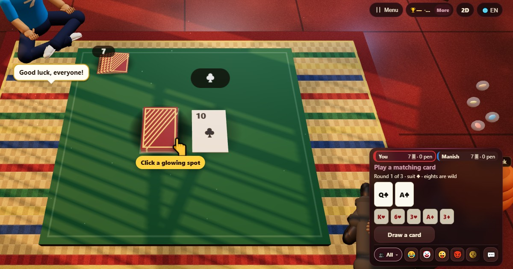

Çılgın Sekizler (Crazy Eights)
- 👥 2–4 oyuncu
- Kart oyunları
- 🆓
Türkçe rehber
Seri ya da değer eşleştir, sekizleri joker kullan, elini ilk bitir.
English name: Crazy Eights

Nasıl oynanır
- İki oyuncuda herkes yedi, daha fazlasında beş kart alır. Bir kart desteyi başlatır.
- Sıran gelince en üstteki kartla türü ya da değeri uyan bir kart oyna.
- Sekiz her kartın üstüne oynanabilir ve ardından gelmesi gereken türü sen söylersin.
- Oynayacak bir şey yoksa bir kart çek. Oynayabiliyorsan oyna; yoksa pas geç.
- Biri kartsız kaldığında tur biter.
Puanlama
Elinde kalan kartlar aleyhine sayılır: sekiz 50, papaz, kız ya da vale 10, as 1, diğer kartlar kendi sayısı kadar.
Kim kazanır
Üç turun sonunda en az ceza puanı olan kazanır.
Sık sorulan sorular
Sekiz ne yapar?
Her kartın üstüne oynanabilir ve onu oynayan sonraki türü seçer.
Çekme destesi biterse ne olur?
Oynanmış kartlar, en üstteki hariç, karıştırılıp yeni bir deste yapılır.
Nasıl oynanır
- Misafir olarak: Üyelik ve giriş yok. Bir ad seç ve hemen oyna.
- Bilgisayara karşı: Kimse yoksa bilgisayar oyuncuları boş yerleri doldurur. Kolay, normal veya zor.
- Online: Dünyanın her yerinden oyuncularla açık bir masaya otur.
- Yakındaki arkadaşlarla: Oyunu bir telefonda başlat, kodu veya QR kodu paylaş. Arkadaşların kendi telefonlarından katılır.
- Tek telefonda: Telefonu sırayla elden ele verin: bütün aile için tek cihaz yeter.
Diğer diller
- हिन्दी: क्रेज़ी एट्स
- Hinglish: Crazy Eights
- Español: Ocho locos
- Português: Oito maluco
- Français: Huit américain
- Deutsch: Verrückte Achter
- Bahasa Indonesia: Crazy Eights
- Italiano: Otto matti
- 日本語: クレイジーエイト
- 한국어: 크레이지 에이트
- 中文: 疯狂八点
- Русский: Сумасшедшие восьмёрки
- اردو: کریزی ایٹس
- नेपाली: क्रेजी एट्स
- বাংলা: ক্রেজি এইটস
- English: Crazy Eights · Tüm kurallar (İngilizce)
Oyun fikirleri
Tüm oyunlar


ChitPlay'de gerçek para, bahis veya ödül yoktur. Puanların değeri yoktur.